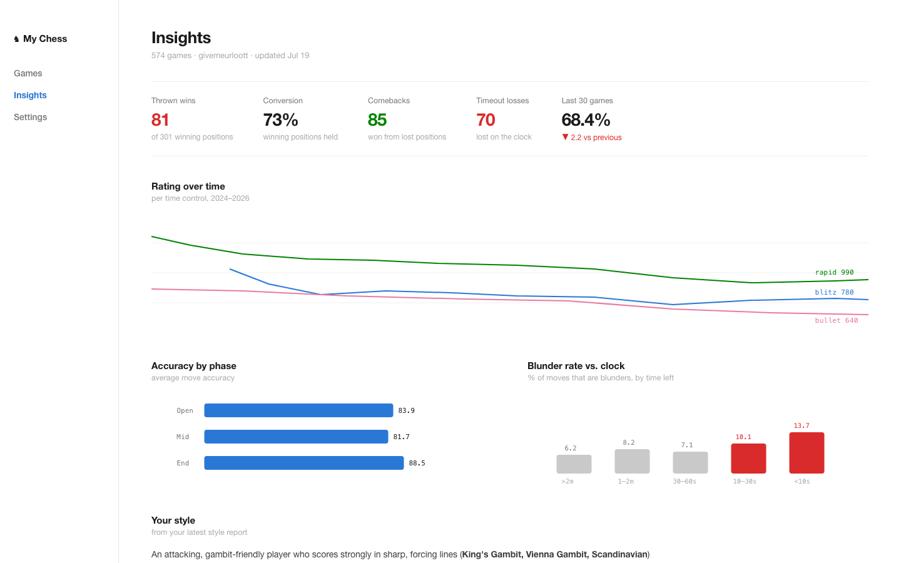
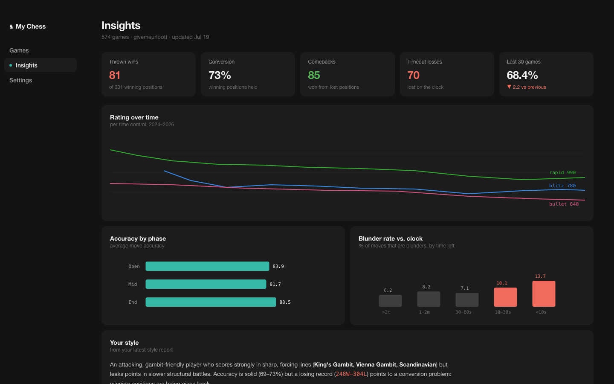
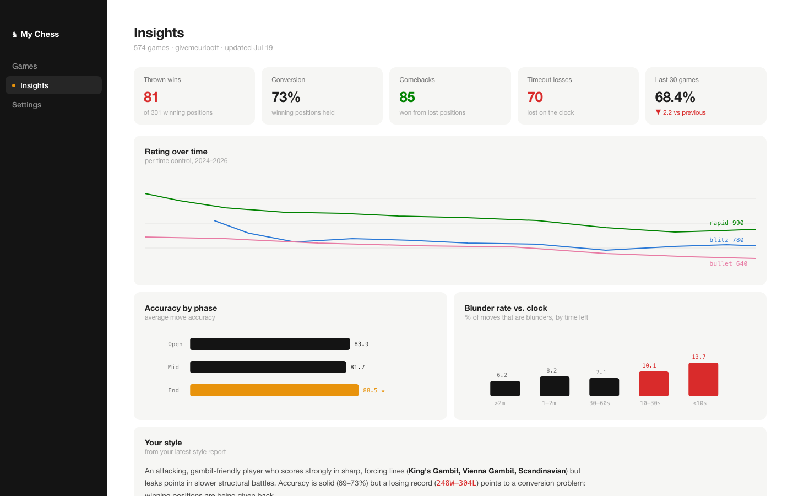

My Chess — simple black & white themes (round 2)
Quieter this time: normal-case type, calm spacing, color kept for data. Tell me 4, 5, or 6 (or mix & match).
4 — Minimal Light ■
All-white, no boxes at all — just whitespace and thin hairlines. Blue for the active nav item and magnitude bars; red/green only where numbers are good or bad. The most airy and minimal of the three.

5 — Minimal Dark ■
Soft near-black (not pure black) with gently raised rounded cards — the calm version of a dark theme. One teal accent, softened red/green tuned for dark backgrounds.

6 — Ink ■
White main area with a black sidebar — the black/white split is the theme. Soft light-gray rounded cards, black chart bars, and one warm amber accent for highlights (best stat, active nav dot).
